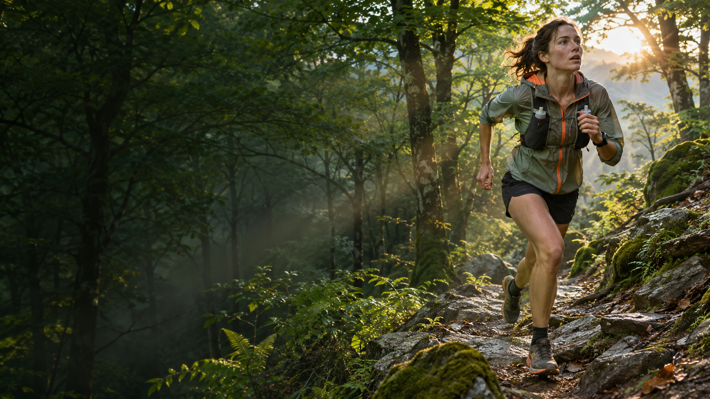
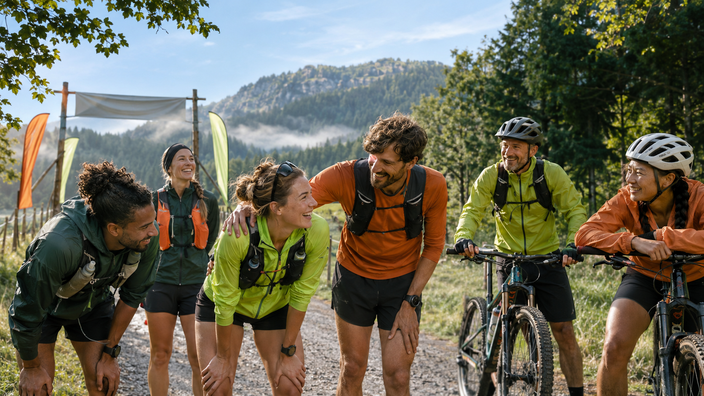

Descubre
Pruebas relevantes según deporte, nivel, distancia y territorio.
Digital product experience · 2026
Diseño responsive para descubrir eventos, inscribirse y construir una historia deportiva que siempre invita a seguir.

Una plataforma · dos experiencias
 OAKShared data layer
OAKShared data layer
Discovery
Filtros persistentes, mapa contextual y tarjetas que permiten comparar lo esencial.
Rascafría · 21 km · +980 m
 02 JUNCICLISMO
02 JUNCICLISMOCercedilla · 86 km · +1.740 m

16 JUNRUNNINGMadrid · 10 km · urbano
Mobile first moments
La versión móvil prioriza las tareas que ocurren fuera del escritorio: descubrir, guardar, consultar y enseñar el dorsal.
Controles al alcance del pulgar.
La información crítica se entiende de un vistazo.
Cada proceso puede interrumpirse y continuar.
390 × 844
Cards verticales, filtros como bottom sheet y navegación persistente.
21 km · +980 m · 38 €
10 km · urbano · 24 €
Personal growth
La topografía de marca se convierte en un sistema de logros que crece con el deportista.
Madrid · Trail & Running
7retos01MEDIA MADRID02CROSS DEHESAUI foundations
86 km · +1.740 m
Warm Sand sustituye cualquier blanco.
Desktop + mobile web
Overcome. Achieve. Keep going.